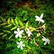

Basonym of Drug
Ela
Main Synonym
- Krangi
- Dravidi
- Truti
- Triputa
- Tuttha
- Pruthvika
Regional Name
- Bengali: Chot Elach
- Gujarati: Elachi
- Hindi: Choti Ilaychi
- Kannada: Elakki
- Tamil: Yelakka
- English: Lesser Cardamom
- Telugu: China Elakulu
Botanical Name
Elettaria cardamomum
Family
Zingiberaceae
Classification (Gana)
Aacharya Sushruta: Eladi
Aacharya Charaka: Swasahara, Angamarda Prashamana, Katu Skandha, Sirovirechana Gana
Aacharya Vagbhata: Eladi, Trijataka, Chaturjataka
External Morphology
3 to 4-meter high annual herb
Useful Parts
Important Phytoconstituent
- Bornneol
- Camphene
- Myrcene
- Camphor
- Citral
Rasa Panchak
- Rasa: Katu, Madhura
- Guna: Laghu, Ruksha
- Virya: Shita
- Vipaka: Katu
Action
- Kaphavatahara (Balances Kapha and Vata doshas)
Therapeutic Indication
- Deepan (Increases appetite)
- Hridya (Cardiotonic)
- Swasakasahara (Anti-cold and cough)
- Chardinigrahana (Anti-emetic)
Therapeutic Uses
- Mutrakiccha: Ela with Dadhi Mastu is beneficial in painful micturition.
- Timira: Soak Ela powder in cow’s urine for 3 days, apply as collyrium, is beneficial in impaired vision.
- Hridroga: Ela with Pippalimoola taken with honey is beneficial for heart health.
Dose
Formulations
- Eladi Churna
- Eladyarista
- Eladi Kashaya
Adverse Effect
Not Known
Remedial Measure
Not required